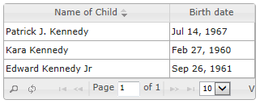
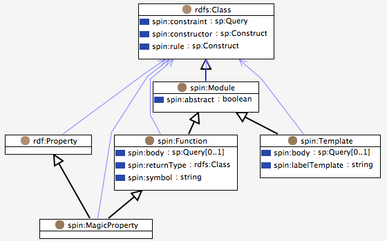

Copyright © 2011 by the Submitting Members.
This document is available under the W3C Document License. See the W3C Intellectual Rights Notice and Legal Disclaimers for additional information.
The SPIN Modeling Vocabulary is a light-weight collection of
RDF properties and classes to support the use of SPARQL to
specify rules and logical constraints. Based on an RDF
representation of SPARQL queries, SPIN defines three class
description properties:
spin:constraint can be used to define conditions
that all members of a class must fulfill.
spin:rule can be used to specify inference rules
using SPARQL CONSTRUCTs and DELETE/INSERTs.
spin:constructor can be used to initialize new
instances with default values.
In addition to these class description properties, SPIN provides
a powerful meta-modeling capability that can be used to build
your own modeling language and SPARQL extensions.
These meta-modeling features provide the ability to encapsulate
reusable SPARQL queries into templates, and to derive
new SPARQL functions as well as magic properties from other SPARQL
queries and functions.
SPIN has originally evolved as a specification developed by TopQuadrant. As of February 2011, SPIN has been published by W3C as a member submission. TopQuadrant may continue to improve SPIN in the future and make changes that will be published here. As of July 2014, this version is almost identical to the official W3C submission, except that we have lifted the requirement of using the SPIN RDF syntax for the definition of queries and update commands if (and only if) sp:text triples are present. Accordingly, we have changed the RDF source code of some examples to make them easier to read. Another change in June 2013 (with TopBraid 4.3) was the addition of the concept of (optional) column metadata attached to SPIN templates. The version of July 2014 (with TopBraid 4.5) has introduced the concept of union templates, and the built-in SPARQL functions spin:ask, spin:construct and spin:select. The August 2014 version added constraint violation levels. The November 2014 version introduced syntactic sugar on ASK constraints.
SPARQL is now firmly established as the standard query language for
RDF models and Semantic Web data. Many RDF APIs and databases come
with SPARQL support out-of-the-box. At the same time, SPARQL can be
regarded as more than just a query language with a SELECT
keyword: SPARQL also provides means to check whether certain conditions
currently hold in an RDF model (ASK), to derive new
triples from existing triples (CONSTRUCT), and to
perform DELETE or INSERT operations.
While these powerful elements are increasingly used by developers to
solve application and modeling problems, SPIN defines a systematic
framework on how to use SPARQL queries to drive applications.
SPIN takes SPARQL a step further and uses it to enhance existing RDF
models with formal, executable descriptions.
Based on the SPIN SPARQL Syntax, the SPIN Modeling Vocabulary (described in this document) defines a light- weight set of RDFS classes and properties that can be used to systematically embed SPARQL queries into RDF models so that they can be executed with well-defined semantics. The basic idea is to use specific RDF properties to link classes with SPARQL queries so that those SPARQL queries can be executed with a given context.
The following chapters describe how this approach can be used to describe classes (and their instances, Chapter 2), and how to build more complex modeling constructs out of reusable SPARQL queries (Chapter 3). Chapter 4 describes guidelines on how the SPIN vocabulary should be used in the context of the Semantic Web.
Note that the example RDF snippets in this document mostly use the human-readable
notation of SPIN RDF, using the sp:text property.
SPIN editing tools such as TopBraid typically generate SPIN RDF triples that
are better suited for machines to handle because they contain proper references
to URI resources, are independent of prefix declarations etc.
The SPIN class description vocabulary defines several RDF properties
that can be used to attach SPARQL queries to classes. The property
spin:query is the common base property of
spin:constraint, spin:rule and
spin:constructor. SPIN-compliant tools can use these
properties to execute SPARQL queries over the instances of the associated
class(es) in response to events. For example, spin:rule
can be used by SPIN reasoning engines to construct inferred RDF triples
from the currently asserted information in the model.
The SPARQL queries referenced by the SPIN properties are interpreted
in the context of the associated class. At run-time, the SPARQL variable
?this is (by default) pre-bound with instances of the class and its
sub-classes. Typically, the query itself does not need to bind
?this to any value in the WHERE clause.
The execution context (e.g., inference engine) will do this before the
query is executed. However, if the query object has the value true
for the property spin:thisUnbound then the system will
not do this pre-binding. See separate section
on details about spin:thisUnbound.
SPIN takes an object-oriented world view on Semantic Web models,
in which SPARQL queries play a similar role to functions and methods.
Inheritance (expressed using rdfs:subClassOf) is treated
in the sense that any query defined for superclasses will also be
applied to subclasses. In other words, SPIN class descriptors can
only "narrow down" and further restrict what has been defined further
up in the class hierarchy. In this spirit, global class
descriptions are those that are attached to the root class
rdfs:Resource or its OWL equivalent owl:Thing.
Those global queries may not even mention ?this at all.
The following sections provide details on the three SPIN class description properties.
The property spin:constraint can be used to link an
rdfs:Class with SPARQL ASK or
CONSTRUCT queries.
Each ASK query defines a constraint that is assumed to evaluate to
false for each instance of the associated class (and
its subclasses). In other words, if an ASK constraint evaluates to
true for one instance, then the instance violates the condition.
Optionally, CONSTRUCT queries can create instances of a
spin:ConstraintViolation class that provide details
on a specific violation.
At query execution time, the SPARQL variable ?this is bound
to the current instance of the class.
Interactive tools such as editing forms may use the constraints to validate user input. Web services may check parameter ranges. Since SPIN queries are directly attached to class definitions in a machine-readable format, the intended "meaning" and scope of those classes can be clearly communicated to other agents.
The following example defines a constraint on the example class
ex:Parent so that each instance of parent must
be at least 18 years of ex:age.
ex:Parent
a rdfs:Class ;
rdfs:label "Parent"^^xsd:string ;
rdfs:subClassOf ex:Person ;
spin:constraint
[ a sp:Ask ;
sp:text """
# must be at least 18 years old
ASK WHERE {
?this ex:age ?age .
FILTER (?age < 18) .
}"""
] .
Constraint violations may be associated with additional information.
In the following example, the violation will be reported as a warning
and pointing at the ex:age property as the cause.
ex:Parent
a rdfs:Class ;
rdfs:label "Parent"^^xsd:string ;
rdfs:subClassOf ex:Person ;
spin:constraint
[ a sp:Ask ;
sp:text """
# must be at least 18 years old
ASK WHERE {
?this ex:age ?age .
FILTER (?age < 18) .
}""" ;
spin:violationPath ex:age ;
spin:violationLevel spin:Warning
] .
The following example uses a SPARQL CONSTRUCT query, which is
more complex than the ASK style but much more flexible.
The CONSTRUCT is assumed to create instances of the system class
spin:ConstraintViolation. These instances are usually
blank nodes, and additional properties can be attached to
violation instances so that editing tools can guide user input:
rdfs:label can provide a human-readable text
that explains the reason of the constraint violation
spin:violationRoot can link to the resource
that is the source of the constraint violation
spin:violationPath can point to a SPIN RDF
path expression, which is often the URI of a property
spin:violationValue can point to a specific RDF node
that caused the violation (together with violationRoot and
violationPath this can be used to point at a certain triple)
spin:violationLevel can point to an instance of
spin:ConstraintViolationLevel to indicate the
severity of the violation. See the table below for possible values.
Defaults to spin:Error.
spin:fix can point to one or more
SPIN Templates that wrap a SPARQL
Update request. Details below.
Supported values of spin:violationLevel are:
| Level | Description |
|---|---|
| spin:Info | Indicates that the violation is not a problem. Can be used for diagnostic and debugging purposes. |
| spin:Warning | A problem that may not have to be fixed but may lead to issues in the future. |
| spin:Error | An error that should be fixed. This is the default level. |
| spin:Fatal | A severe error that must be fixed. Constraint checking engines may decide to stop further evaluation once a fatal error has been detected. |
The following example constructs constraint violations whenever a person's spouse has the same gender as the current person.
spin:constraint
[ a sp:Construct ;
sp:text """
CONSTRUCT {
_:violation a spin:ConstraintViolation ;
spin:violationRoot ?this ;
spin:violationPath kennedys:spouse ;
spin:violationValue ?spouse ;
spin:violationLevel spin:Warning ;
rdfs:label "Same-sex marriage not permitted (in this model)"
}
WHERE {
?this kennedys:spouse ?spouse .
?this kennedys:gender ?gender .
?spouse kennedys:gender ?spouseGender .
FILTER (?gender = ?spouseGender) .
}"""
] .
SPIN constraints can be used for various purposes, but in
particular to verify that an instance of a class maintains its
expected state with regards to its property values and
relationships with other resources. For example, simple SPIN
constraints may only verify the range of some datatype literals,
but other, more complex, constraints may walk adjacent nodes as well,
starting a graph pattern matching at the context variable ?this.
Anything that can be expressed in SPARQL can be used in SPIN constraints,
including queries against other SPARQL end points, FILTER clauses
and complex mathematical calculations.
Please note that the values of the spin:constraint
property may also be SPIN template calls,
assuming these templates wrap CONSTRUCT or ASK queries. Basically, SPIN
allows you to use templates whenever a query is expected, as long as
the query type matches the expectations.
Constraint checks of the CONSTRUCT form may also create
extra information that can guide the user to fix the reported constraint
violation. The spin:ConstraintViolation can have one or more values
for spin:fix, pointing to a call (instance) of a
spin:UpdateTemplate. The template call will typically have
additional arguments that can also be constructed as part of the constraint
check's CONSTRUCT clause.
The following example query is attached to a Person class using
spin:constraint. If the Person (?this)
has some spouse and is less than 18 years of age, then a violation
will be reported. The spin:ConstraintViolation also
points to a SPIN template of type :DeleteTriple,
constructed as an anonymous node with the identifier _:fix.
CONSTRUCT {
_:violation a spin:ConstraintViolation ;
rdfs:label "Underage marriage not allowed" ;
spin:violationRoot ?this ;
spin:violationPath :spouse ;
spin:fix _:fix .
_:fix a :DeleteTriple ;
rdf:subject ?this ;
rdf:predicate :spouse ;
rdf:object ?spouse .
}
WHERE {
?this :spouse ?spouse .
?this :age ?age .
FILTER (?age < 18) .
}
Without going into details about the :DeleteTriple template,
it is a spin:UpdateTemplate that wraps a SPARQL DELETE
command on the specified triple. The template takes three arguments,
rdf:subject, rdf:predicate and rdf:object,
which are filled by the CONSTRUCT above using the current variable bindings.
The template would have a human-readable label so that user interfaces can
propose a fix from a context menu.
The property spin:rule can be used to link an
rdfs:Class with SPARQL CONSTRUCT queries
or DELETE/INSERT update operations.
Each query or operation defines an inference rule that is applied
to all instances of the associated class and its subclasses.
If the property spin:rule points to a CONSTRUCT query,
then this defines an inference rule that defines how additional triples can
be inferred from what is stated in the WHERE clause.
For each binding of the pattern in the WHERE
clause of the rule, the triple templates from the CONSTRUCT
clause are instantiated and added as inferred triples to the
underlying model. At query execution time, the SPARQL variable
?this is bound to the current instance of the class.
The following example defines a rule that infers the values of the
ex:grandParent property from values of ex:child.
ex:Person
a rdfs:Class ;
rdfs:label "Person"^^xsd:string ;
rdfs:subClassOf owl:Thing ;
spin:rule
[ a sp:Construct ;
sp:text """
CONSTRUCT {
?this ex:grandParent ?grandParent .
}
WHERE {
?parent ex:child ?this .
?grandParent ex:child ?parent .
}"""
] .
The property spin:rule has the type spin:RuleProperty.
Any sub-property of spin:rule can be used in addition to
spin:rule to store rules.
The newly inferred triples of a CONSTRUCT rule will go into a special
inferences graph. This graph is part of the default query graph that the WHERE clause
will be evaluated on, so that inferences from the previous step will be visible to the "next" rule.
If the property spin:rule points to a SPARQL UPDATE operation, then
this defines an update rule that will lead to assertions, not inferences.
This is potentially more powerful than CONSTRUCT rules, because
UPDATE rules may include a DELETE clause (DELETE WHERE
is also supported), and furthermore it becomes possible to specify the target
graphs that shall be modified.
Another advantage of using UPDATE rules is that no specific inferences graph may
be needed, and thus rule execution may be faster.
However, note that UPDATEs with DELETEs may more easily lead to infinite loops, because rules may undo the results of previous steps. Also note that changes will be made to the actual models, so that the result of rules may be accidentally saved while editing and evaluating the rules.
The following example defines a rule that infers the values of the
ex:grandParent property from values of ex:child,
and inserts the resulting triples into a specified named graph.
WITH <http://example.org/people/relationships>
INSERT {
?this ex:grandParent ?grandParent .
}
WHERE {
?parent ex:child ?this .
?grandParent ex:child ?parent .
}
By default all rules may be executed in a random order. However, the SPIN vocabulary provides some properties that can be used to guide the execution engine. Designers can use these properties to attach metadata to the rules to help the engine skip certain rules. This often makes it possible to just do a single iteration over all rules.
On the most granular level, it is possible to group rules into categories
using sub-properties of spin:rule. The property
spin:nextRuleProperty can be used to link two such
properties together, so that rules from one group will be executed before
others. For example, if you want to run all ex:importRules
before all spin:rules then add the triple
ex:importRule spin:nextRuleProperty spin:rule and
use ex:importRule to attach the high priority rules to your class.
The rdfs:comment of a rule should be used as the final level of
ordering. This allows developers to insert comments
such as "# Step 1: ...", "# Step 2: ..." etc as first lines of their
rules. User interfaces can use the same ordering and (like TopBraid)
may do so by default.
The property spin:rulePropertyMaxIterationCount can be attached
to any sub-property of spin:rule to instruct the engine to
execute certain rules a certain number of times. In particular this
makes it possible to make sure that rules that create blank nodes are only
executed once, avoiding problems with infinite loops.
In some cases, rules may be imported from a library. Such library
files may only declare the rules themselves but have no additional
triples in them that would be relevant for the rule execution. The
base URI (owl:Ontology) of such files can be annotated
to be an instance of spin:LibraryOntology. In this
case, all triples from that named graph should be ignored by SPIN
rule engines.
In the default setting, a SPIN rules or constraint checking engine will
pre-bind the variable ?this with all instances of the associated
class. A naive implementation of this is to add a triple match such as
?this rdf:type ex:Class to the WHERE clause. This check will
make sure that the system only iterates over values of that class. However,
this additional check can also be a significant amount of work for the engine,
and may lead to many unnecessary matches. Furthermore, in many cases this
pre-binding is not really necessary because the remaining conditions in the
WHERE clause may be sufficiently strong to bind ?this with all
expected instances.
In those cases, the property spin:thisUnbound
should be set to "true"^^xsd:boolean to instruct the engine
to bypass the explicit binding of ?this. The spin:thisUnbound
property has been introduced with SPIN 1.1. As a recommendation, display engines
should render the variable ?this in bold face to indicate that it has
a special meaning, unless spin:thisUnbound is set.
The property spin:constructor can be used to link an
rdfs:Class with SPARQL CONSTRUCT queries
or DELETE/INSERT update operations.
Each Construct query defines an inference rule that can be
applied to all new instances of the associated class and its
subclasses at creation-time. Constructors are usually only
evaluated once, to set initial default values to some properties
of the instances. At query execution time, the SPARQL variable
?this is bound to the current instance of the class.
For example, if a user creates a new instance of
ex:USCitizen then its constructor can be used to
automatically set its ex:birthCountry
property to ex:USA. However, this value may of
course be replaced later, during the evolution of the model.
ex:USCitizen
a rdfs:Class ;
rdfs:label "US citizen"^^xsd:string ;
rdfs:subClassOf ex:Person ;
spin:constructor
[ a sp:Construct ;
sp:text """
CONSTRUCT {
?this ex:birthCountry ex:USA .
}
WHERE {
}"""
] .
At execution time, the only triple that will be reliably present
for ?this is the rdf:type triple that
links ?this with the class that has the constructor
attached to it, or a subclass thereof.
SPIN-compliant engines need to make sure that superclass
constructors are executed before subclass constructors.
As a consequence, constructors of subclasses may assume that
additional triples are present, and may query them in their
WHERE clauses.
Constructors should also be executed by SPIN inference engines:
If a rule creates a new rdf:type triple, then the
corresponding constructors should be called on the subject of the
type triple. The constructors should be executed after the rule
has been executed completely - this will make sure that all
triples mentioned in the rule's construct template will have been
created and can be queried by the WHERE clause of the constructors.
SPARQL queries are often similar and only differ in a value or two. SPIN can be used to generalize SPARQL queries so that they can be reused in multiple contexts. The SPIN Meta-Modeling Vocabulary described in the following sections introduces three mechanisms of encapsulating SPARQL query templates: Templates, Functions and Magic Properties.
Templates are reusable "boxed" SPARQL queries that can be used in conjunction with
properties such as spin:rule or spin:constraint, but
also in other places.
The following example defines a template ex:MinCardinality
that can be used to verify that ?this has at least
?count values for a given property ?predicate.
Note that the function ex:cardinality is a user-defined
SPIN function that will be described later.
ex:MinCardinality
a spin:AskTemplate ;
rdfs:subClassOf spin:AskTemplates ;
rdfs:comment "Checks whether ?this has at least ?count values for a given property ?predicate." ;
rdfs:label "Min cardinality"^^xsd:string ;
spin:constraint
[ a spl:Argument ;
rdfs:comment "the minimum number of values expected" ;
spl:predicate ex:count ;
spl:valueType xsd:integer
] ;
spin:constraint
[ a spl:Argument ;
rdfs:comment "the property being restricted" ;
spl:predicate ex:predicate ;
spl:valueType rdf:Property
] ;
spin:labelTemplate "at least {?count} values for {?predicate}"^^xsd:string ;
spin:body
[ a sp:Ask ;
sp:text """
ASK WHERE {
FILTER (ex:cardinality(?predicate) < ?count) .
}"""
] .
Templates are instances of subclasses of the metaclass spin:Template:
spin:AskTemplate, spin:ConstructTemplate,
spin:SelectTemplate and spin:UpdateTemplate, depending
on the type of query that they wrap. These metaclasses should not be confused
with the similarly sounding classes such as spin:AskTemplates,
which are only meant to serve as a way of organizing existing templates in
categories, e.g. so that they show up nicely in class trees.
In order to "call" a template, the user needs to instantiate the template class.
In the following example, the above template ex:MinCardinality
is used to constrain that all instances of the class ex:Parent
must have at least one value for the ex:child property.
ex:Parent
a owl:Class ;
rdfs:label "Parent"^^xsd:string ;
rdfs:subClassOf owl:Thing ;
spin:constraint
[ a ex:MinCardinality ;
ex:count 1 ;
ex:predicate ex:child
] .
Each argument of a template must be represented by one argument descriptor
(instance of the template spl:Argument, where the namespace
for the prefix spl is http://spinrdf.org/spl#).
Each argument descriptor must point to an RDF property using
spl:predicate. This property will hold the actual template
values when the template is instantiated.
The local name of that property is used as variable name for the argument.
For example, the property sp:arg1 represents the variable
?arg1.
Arguments can also have a value type using spl:valueType and
might be spl:optional.
Furthermore, arguments can define a default value using
spl:defaultValue. The default value shall be used for an
argument if no value has been specified explicitly in the template call.
It is strongly recommended to define an rdfs:comment for
each argument, to describe the role of the argument in the query.
The encapsulated query itself must be stored using spin:body.
Depending on the type of template, spin:body must be an instance
of sp:Ask, sp:Construct, sp:Describe
or sp:Select, sp:Modify or sp:DeleteWhere.
At execution time, the query will already have the variables declared in the argument descriptors pre-assigned with the arguments in the template call.
Template calls can not be executed if one or more of the non-optional arguments
have no values. The only exception is if the template class (or any of its
superclasses) has rdf:type spl:UnionTemplate, in which case all
arguments are optional.
Templates should define a value for spin:labelTemplate
with place-holders for the variable names between { and } so that
user interfaces can render the template calls in a human-readable way.
For example, the template call above would be rendered as
at least 1 values for ex:child
Templates can be published on the Semantic Web and then imported by other models. SPIN agents could in principle dynamically resolve templates from the internet, similar to distributed Web Services. Such template libraries can specify domain-specific modeling languages (as alternatives to, or in addition to languages like OWL). Since templates are executable, these template-based modeling languages have well-defined formal semantics.
When CONSTRUCT templates are executed, for example as SPIN constraints or rules, then the SPIN engine needs to also execute the bodies of any superclass of those templates.
See also: Understanding SPIN Templates
As of SPIN 1.3.0 (published with TopBraid 4.3 in June 2013), the SPIN Modeling Vocabulary
has been extended with classes and properties that can be used to attach metadata to
tabular data, especially those tables produced by SELECT templates.
The class spin:TableDataProvider has been introduced to serve as one superclass
of spin:SelectTemplate. Each spin:TableDataProvider (and thus
SELECT template) may point to one or more instances of spin:Column via the
property spin:column.
The instances of spin:Column are often blank nodes.
Each spin:Column may have the following properties (all except
spin:columnIndex are optional):
| Property | Range | Description |
|---|---|---|
| rdfs:label | xsd:string | A display label for the head of the table. |
| spin:columnIndex | xsd:integer | The index of the column from left to right, starting with 0. |
| spin:columnType | rdfs:Class | The (data) type of the column. For example, xsd:float columns should be right-aligned. |
| spin:columnWidth | xsd:integer | The width of the column in pixels. |
The following example (in Turtle notation) defines a SPIN template for a SELECT query that returns the name and birth date of each child of a given parent.
<http://topbraid.org/schema.ui#ChildrenOverview>
a spin:SelectTemplate ;
rdfs:comment "A (demo) SELECT template displaying some information about the children of a given schema:Person."^^xsd:string ;
rdfs:label "Children overview"^^xsd:string ;
rdfs:subClassOf spin:SelectTemplates ;
spin:constraint
[ a spl:Argument ;
rdfs:comment "The schema:Person to get the children of."^^xsd:string ;
spl:predicate arg:parent ;
spl:valueType schema:Person
] ;
spin:body
[ a sp:Select ;
sp:text """
SELECT ?childName ?birthDate
WHERE {
?child schema:parent ?parent .
?child rdfs:label ?childName .
OPTIONAL {
?child schema:birthDate ?birthDate .
} .
}
"""
] ;
spin:column
[ a spin:Column ;
rdfs:label "Name of Child"^^xsd:string ;
spin:columnIndex 0 ;
spin:columnType xsd:string ;
spin:columnWidth 200
] ;
spin:column
[ a spin:Column ;
rdfs:label "Birth date"^^xsd:string ;
spin:columnIndex 1 ;
spin:columnType xsd:date ;
spin:columnWidth 100
] ;
spin:labelTemplate "Overview of children of {?parent}"^^xsd:string .
A possible rendering of such a table could look like the following (here, using
swa:ResultSetGrid from SPARQL Web Pages).

SPIN can be used to define new SPARQL functions so that these
new function can be used in expressions such as FILTER
or BIND clauses.
Technically, SPIN Functions are very similar to SPIN Templates.
Functions are defined by a body and zero or more argument descriptors.
The body of a function must be an Ask query, or a Select query with
exactly one result variable.
The following example declares a new function ex:cardinality
that gets the number of values of a given property at the current
subject (?this), using a SPARQL COUNT
query.
ex:cardinality
a spin:Function ;
rdfs:subClassOf spin:Functions ;
rdfs:comment "Gets the number of values of a given property at the current subject (?this)." ;
rdfs:label "cardinality"^^xsd:string ;
spin:constraint
[ a spl:Argument ;
rdfs:comment "The property to get the cardinality of." ;
spl:predicate sp:arg1
] ;
spin:body
[ a sp:Select ;
sp:text """
SELECT (COUNT(?object) AS ?result)
WHERE {
?this ?arg1 ?object .
}"""
] .
Once the function is defined, it can be used in SPARQL queries such as
FILTER (ex:cardinality(ex:child) > 0)
The expression above is represented in SPIN syntax as
[ a sp:Filter ;
sp:expression
[ sp:arg1 [ sp:arg1 :child ;
a ex:cardinality
] ;
sp:arg2 0 ;
a sp:gt
]
]
Arguments are declared the same way as with Templates (see above).
The main difference is that a function's arguments must be ordered
so that the traditional textual SPARQL notation can correctly round-
trip them. By default, a Function's arguments are sorted alphabetically
by their local name.
Functions often use the system properties sp:arg1,
sp:arg2 etc to declare the arguments in their expected order,
but any other property can be used as well.
Function calls will use the declared default values for an argument if
no other values have been explicitly specified.
Functions do not need to have a spin:body. In those cases,
the execution environment is assumed to provide different implementations
of them, e.g. as hard-coded Java functions or using JavaScript
(see SPINx).
Function (and template) classes may be marked to be abstract by setting the property
spin:abstract to true. This indicates to the environment
that the function shall not be instantiated directly, but only serves as a way
to organize and group other functions in a hierarchy.
Functions can be marked to be private by setting the property
spin:private to true. This tells the environment that
the function is only supposed to be used as a "helper" of other functions, but
not elsewhere.
See also: Understanding SPIN Functions
SPIN compliant SPARQL engines must provide a built-in SPARQL function
spin:eval that can be used to evaluate a SPIN expression or
query at execution time. This makes it possible to define higher level
functions, that take other function calls and queries as arguments.
For example, it is possible to place a SPIN expression as an argument into
a template. The body of the template can then reference the expression
(as a pre-bound variable) and evaluate it.
spin:eval takes any odd number of arguments. The first argument
must be a reference to a SPIN expression (e.g., instance of a SPARQL function
from the SP namespace) or a sp:Select or a sp:Ask.
The other arguments must come in pairs, so that the first one is a property
and the second is a value that shall be pre-bound in the evaluation of the
expression.
In the following example, an expression (bound to a variable ?expression)
is executed, with the variable ?arg3 bound to the literal "value".
The result of the function will be assigned to ?result.
BIND (spin:eval(?expression, sp:arg3, "value") AS ?result)
If the expression argument is a sp:Select, then the result will
be the first binding of the first result variable.
If the expression argument is a sp:Ask, then a typed boolean literal
will be returned.
SPIN compliant SPARQL engines must provide a built-in SPARQL function
spin:ask that can be used to execute a SPIN ASK query or
corresponding template call at execution time.
This makes it possible to define higher level functions and execution engines,
that take other queries as arguments.
The first argument of spin:ask must be a reference to a sp:Ask
or a template call that has an ASK query as its body.
All subsequent arguments must come in pairs, with the first one being a variable name
and the second its binding. These bindings need to be applied for the execution of
the query. The result of spin:ask is a boolean.
In the following example, ?query is assumed to point at a sp:Ask,
and the variable ?this will be pre-bound with the value owl:Thing:
BIND (spin:ask(?query, "this", owl:Thing) AS ?result)
Magic Properties (aka Property Functions) are supported by many SPARQL engines (such as Jena ARQ) to dynamically compute values at query time. Typically, a magic property is backed by a calculation function that determines bindings of the variables on the left or right side of the predicate.
SPIN enables users to define such magic properties. The magic properties are declared in a very similar way as SPIN Functions, but provide greater flexibility. In contrast to BIND/FILTER functions, magic properties can return multiple values. Furthermore, any input or output variable may be unbound, and it is the task of the magic property to find all potential bindings of those variables.
The metaclass spin:MagicProperty is used to represent magic
properties. As shown below, spin:MagicProperty is a subclass
of spin:Function and rdf:Property, making it possible
to use them either as functions or as predicates in a triple match.

Let's look at an example magic property grandParent which defines
the grandparent relationship between persons. This is defined as a
spin:MagicProperty with one argument ?arg1 of
type kennedys:Person. The spin:body of the magic
property is as follows:
SELECT ?grandParent
WHERE {
?parent kennedys:child ?arg1 .
?grandParent kennedys:child ?parent .
}
The complete SPIN RDF definition of this magic property is shown below.
:grandParent
a spin:MagicProperty ;
rdfs:label "grand parent"^^xsd:string ;
rdfs:subClassOf spin:MagicProperties ;
spin:constraint
[ a spl:Argument ;
rdfs:comment "The Person to get the grandparent(s) of."^^xsd:string ;
spl:predicate sp:arg1 ;
spl:valueType kennedys:Person
] ;
spin:body
[ a sp:Select ;
sp:text """
SELECT ?grandParent
WHERE {
?parent kennedys:child ?arg1 .
?grandParent kennedys:child ?parent .
}"""
] .
An example use of this function is
SELECT *
WHERE {
kennedys:JohnKennedyJr :grandParent ?grandParent .
}
Which returns bindings of ?grandParent with
kennedys:JosephKennedy and kennedys:RoseFitzgerald.
At execution time, the predicate :grandParent is treated
like a function call based on the SPARQL query defined as body of the
magic property. The value on the left side of the magic property
will be passed into the function as ?arg1. The result bindings
of the variables in the SELECT clause will be bound to the variables on the
right hand side of the magic property. The names of the input and output
variables are irrelevant, just the order of occurrence counts.
Note that a property like :grandParent can also be used
as a regular property. It is left to the implementation whether it
will create regular triples or do the computation dynamically.
Magic properties can also take multiple arguments and result values using a (rather obscure) list syntax - these cases are technically supported but complex to represent in the SPIN RDF syntax. If possible, it is strongly recommended to define magic properties with just one argument and one result variable. This provides greater flexibility to the implementations, and simplifies the syntax and implementation burden.
With this background, let's look at another use case of the same function from above:
SELECT *
WHERE {
?grandChild :grandParent kennedys:RoseFitzgerald .
}
The query above binds ?grandChild with all grand children
of kennedys:RoseFitzgerald (a cast of dozens, including
kennedys:JohnKennedyJr). It is also possible to leave
the object blank, to get all grandParent relationships
in the whole model.
At execution time, the engine should add the arguments to the result
variables of the body (here: change the signature to
SELECT ?grandParent ?arg1). Then pre-bind all variables
that have been supplied with values and execute the SELECT query.
Use the result bindings to fill in values for the the unbound variables.
If a magic property is used like a triple match, then the result must
include all existing values in the query graph, in addition to the
bindings derived from the function.
Since spin:MagicProperty is a subclass of spin:Function,
any magic property can also be used as a regular FILTER or LET function.
In this case, only the first result variable of the first result row will be
returned.
Note that SPIN functions and magic properties can be used to implement behavior known as backward chaining in rule languages. Functions can call each other, even recursively, and the SPARQL engine will iterate over multiple possible solution spaces and do back tracking if it does not find bindings for the original query.
SPIN compliant SPARQL engines must provide a built-in SPARQL magic property
spin:construct that can be used to execute a SPIN CONSTRUCT query or
corresponding template call at execution time.
This makes it possible to define higher level functions and execution engines,
that take other queries as arguments.
The first argument on the left hand side of spin:construct must be a
reference to a sp:Construct or a template call that has a CONSTRUCT query as its body.
All subsequent arguments must come in pairs, with the first one being a variable name
and the second its binding. These bindings need to be applied for the execution of
the query. The right hand side of the magic property must be a list of a exactly three
entries. Those are typically unbound variables such as (?s ?p ?o) that
will receive the subject, predicate and object of the constructed triples as their values.
If any of those entries are bound, they will be interpreted as a match, which means that
only those triples that actually have matching subject, predicate or object will be
returned by the magic property.
In the following example, ?query is assumed to point at a sp:Construct,
and the variable ?this will be pre-bound with the value owl:Thing.
As a result of the execution, the variables ?s, ?p and ?o
will be bound to the constructed triples.
(?query "this" owl:Thing) spin:construct (?s ?p ?o)
SPIN compliant SPARQL engines must provide a built-in SPARQL magic property
spin:select that can be used to execute a SPIN SELECT query or
corresponding template call at execution time.
This makes it possible to define higher level functions and execution engines,
that take other queries as arguments.
The first argument on the left hand side of spin:select must be a
reference to a sp:Select or a template call that has a SELECT query as its body.
It may also be an sp:Ask query, in which case it is interpreted as
a SELECT query with exactly one result variable and one row.
All subsequent arguments must come in pairs, with the first one being a variable name
and the second its binding. These bindings need to be applied for the execution of
the query. The right hand side of the magic property must be a list of a entries
that match the number of result variables from the SPARQL query.
Those are typically unbound variables such as (?a ?b) if the SELECT
delivers two columns.
If any of those entries are bound, they will be interpreted as a match, which means that
only those rows that actually have matching values will be returned by the magic property.
In the following example, ?query is assumed to point at a sp:Select,
and the variable ?this will be pre-bound with the value owl:Thing.
As a result of the execution, the variables ?a and ?b
will be bound to the resulting variable bindings.
(?query "this" owl:Thing) spin:select (?a ?b)
SPIN is a modeling language that has been designed with the Semantic Web in mind. This chapter describes how SPIN documents should be organized to make the best use of this infrastructure.
SPIN constraints, rules and constructors are associated with RDFS/OWL classes
using dedicated properties such as spin:constraint. On the
Semantic Web this means that when an RDFS class is shared online, then users
of the class will also get the associated semantics in the same way as they
get labels, comments etc. So typically, class definitions and semantics are
stored in the same document.
With the SPIN meta-modeling vocabulary the situation is slightly different,
because SPIN functions and templates can also be used in other places.
However, SPIN functions and templates have a unique URI and therefore can be
uploaded to some Semantic Web site so that SPIN-aware agents can find an
executable description of the function or template by following its URI.
In practice this means that SPIN users planning to share their files should
make sure that the selected URIs are de-referencable. This simply
means that if a software agent encounters a SPIN function in a SPARQL query,
and the function is not natively known to the engine, then the engine can
follow the link to the function to get all triples needed to understand how
to execute it, including spin:body.
If SPIN files are not shared on the Semantic Web but only used locally, then
it is a good practice to help the environment find function and template
definitions. We recommend a naming convention to store such SPIN files with
an ending such as .spin.ttl or .spin.rdf.
This makes it easier for tools to recognize that the file may contain SPIN
functions and templates so that the tool can pre-load the functions into memory in advance.
Some constraint or rule libraries are independent from a particular domain
ontology, and rather describe general patterns. For example, it is possible
to describe the semantics of a subset of OWL using SPIN constraints, and thus
re-use the OWL restrictions vocabulary to validate integrity constraints on
existing OWL models. Such libraries may contain spin:constraints
that are simply attached to owl:Thing or another global root class.
In order to use such libraries in the context of OWL, one option is to define
an owl:imports to link the domain ontology with the constraint
library. However, this means that OWL semantics would be applied to the library
itself, because OWL engines would merge in all the triples from the SPIN file
and treat them on the same level as the actual domain triples. Furthermore,
the additional triples might clutter up user interfaces.
SPIN includes the spin:imports property, that can be used
to link the base URI of a domain ontology with a SPIN file, specified by the
base URI of the SPIN file. For a SPIN constraint checker (or rule engine),
the spin:imports keyword has the same meaning as owl:imports,
i.e. all triples from the imported file will be added to the current RDF graph.
However, the triples specified by spin:imports will not be imported
in an OWL sense and therefore remain invisible to any OWL tool.
In the following example, the current domain ontology (spinOWLTest) imports a
SPIN constraint library that defines a subset of OWL for constraint checking,
so that SPIN engines will report a constraint violation whenever an instance
of :Person does not have 1 :lastName. Note that this
file does not import the SPIN namespace - it just declares a prefix for it.
@prefix : <http://tests.spin.topbraid.org/imports/spinOWLTest#> .
@prefix owl: <https://www.w3.org/2002/07/owl#> .
@prefix spin: <http://spinrdf.org/spin#> .
@prefix rdf: <https://www.w3.org/1999/02/22-rdf-syntax-ns#> .
@prefix rdfs: <https://www.w3.org/2000/01/rdf-schema#> .
@prefix xsd: <https://www.w3.org/2001/XMLSchema#> .
<http://tests.spin.topbraid.org/imports/spinOWLTest>
rdf:type owl:Ontology ;
spin:imports <http://topbraid.org/spin/spinowl> .
:Person
rdf:type owl:Class ;
rdfs:label "Person"^^xsd:string ;
rdfs:subClassOf owl:Thing ;
rdfs:subClassOf
[ rdf:type owl:Restriction ;
owl:cardinality "1"^^xsd:int ;
owl:onProperty :lastName
] ;...
The URL of the SPIN schema is http://spinrdf.org/spin The URL of the SPIN Standard Module library (SPL) is http://spinrdf.org/spl